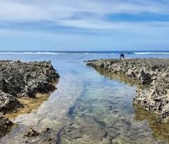
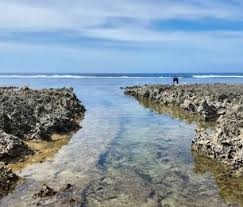

Immuki Island
Immuki Island is a small rocky islet located in Balaoan, in the province of La Union. It is famous for its unique natural saltwater pools formed by rock formations along the shore. The name “Immuki” comes from a local term meaning “small cave.”
 

Visitors to Immuki Island in Balaoan can swim in its natural saltwater rock pools, explore small caves, take scenic photos along the rocky shoreline, and relax while enjoying the peaceful coastal views.